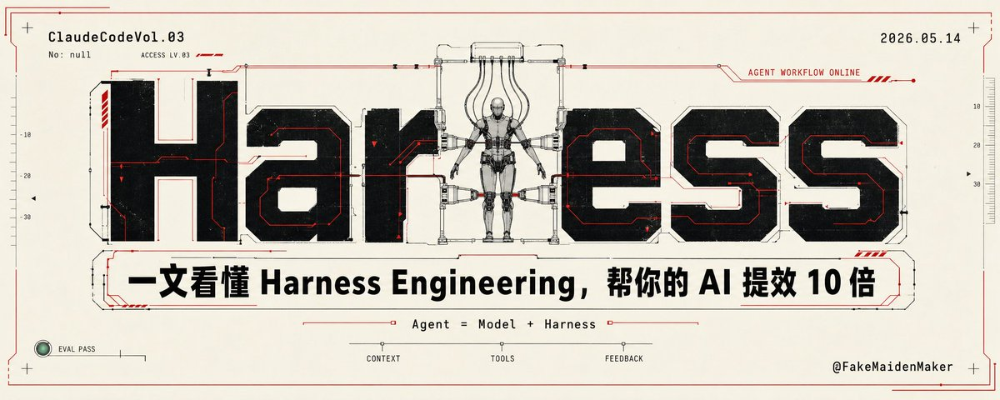

Harness Engineering：Agent 的提效重心不是模型，而是控制框架
这条帖的主张不是“模型更强了”，而是把 Agent 的能力重心从单一模型转向外层的工程壳：上下文怎么喂、工具怎么接、反馈怎么回，才是决定“能不能稳定做事”的核心。
核心判断
如果只换模型、不改 Harness，很多 Agent 看起来更聪明，实际上还是不稳定；真正拉开差距的是把上下文、工具和反馈组织成可重复的执行回路。

一眼看懂：它到底想证明什么
它要讲的不是“模型会不会写”，而是“Agent 能不能做成稳定系统”。也就是说，判断标准从参数、榜单和单次生成，转向了 Harness 是否把模型变成了可调度、可验证、可迭代的执行体。
四个信号，说明这不是普通宣传图
它在工程上强调什么
- 模型不是完整答案：单靠 LLM 还不够，外部壳层决定它能否持续工作。
- 上下文要被组织：不是把资料堆进去，而是把相关信息分层、裁剪、回灌。
- 工具要能调用：Agent 的能力来自可执行动作，而不是静态文本回答。
- 反馈要能闭环：做完一轮后，下一轮要能根据结果修正行为。
它为什么适合做封面
因为它把一个抽象判断做成了有工业感的视觉论点：在 AI Agent 时代，决定结果的不是单点模型神力，而是围绕模型搭出来的执行框架、验证机制和操作回路。
Harness 拆开看：三层才是主体
上下文不是“喂更多”，而是“喂对”
图里的 Context 不是背景噪声，而是让 Agent 知道现在处于什么任务、什么约束、什么状态。真正有效的 Harness 会把上下文切成任务态、工具态和结果态，而不是一股脑塞给模型。
工具接入决定它能不能“做事”
Tools 是 Agent 从聊天升级为执行系统的关键。没有工具，模型最多输出建议；有了工具，模型才能查、改、跑、验，把答案变成动作，把动作变成状态变化。
反馈闭环决定它能不能越做越稳
Feedback 是最容易被忽略的一层，但恰恰决定 Agent 是否会“学会修正”。一轮执行后的结果、失败原因、验证信号，都应该回流到下一轮策略里，否则系统只是在重复犯错。
ProgramBench 的评测逻辑，为什么会让人紧张
从“会写”改成“会重建”
预览文本指向的核心是：AI 要从零开始重建真实开源项目，而不是做表面代码补全。这个设定把任务从局部语法正确，提升到全链路系统重建。
把“相似度”降权，把“最终行为”抬上来
不再奖励看起来像原代码，而是看最终运行结果是否达到预期。也就是说，评估重心从“像不像”切到“能不能用”。
把工具链的差异暴露出来
一旦只验最终行为，Harness 的质量就会放大：上下文组织差、工具链不顺、反馈回路弱的系统，会比单纯模型差距更明显。
结果不是某个分数，而是能力边界被重新标定
这类 benchmark 的价值，不只是“谁高谁低”，而是告诉你：真实软件工程里，Agent 的瓶颈常常不在模型会不会答，而在执行系统能不能把答复变成可验证产物。
这条帖的真正价值：把问题从模型拉回系统
如果把 Agent 的成败完全押在模型本身，就会忽略最关键的一层：模型只是核心计算器，Harness 才是让它进入真实任务世界的控制面。对于高复杂度任务，差距往往不是“哪个模型更会说”，而是“哪个系统更会做完并验完”。
这张图真正讲的是：Agent 不是“更聪明的模型”，而是“被工程化、可闭环、可评估的模型系统”。
适合谁先用这条判断
- 在做 Agent / workflow / coding assistant 的产品或研究团队
- 想优化执行稳定性、失败回溯、工具链调度的人
- 需要从“演示型 AI”转向“可交付 AI”的团队
可复用的阅读顺序
先看“核心判断”，再看“三层 Harness”，最后看“ProgramBench 的评测逻辑”。这样会更容易理解：作者真正想强调的是系统工程，而不是单一模型表现。
下一步怎么用
- 把你的 Agent 拆成 Context、Tools、Feedback 三层检查。
- 把“最终行为”作为验收口径，而不只是中间生成结果。
- 如果系统不稳，先查 Harness，再查模型。